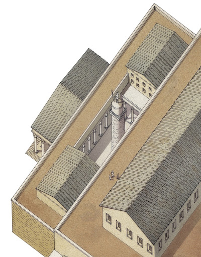
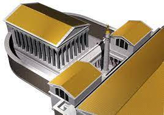

Inaugurato nel 113 d.C., il Foro di Traiano fu costruito per celebrare le campagne di quest'ultimo
contro i daci, svoltesi tra 101 e 106 d.C. L’edificio, grande quanto tutti gli altri Fori messi insieme, fu
pensato dall’imperatore per convincere i cittadini della sua romanità, essendo il primo imperatore
spagnolo, incoronato per meriti e non per sangue. E infatti, a differenza degli altri Fori, lo spazio
destinato all'esaltazione personale era considerevolmente maggiore. La necessità primaria che
spinse alla costruzione fu però quella di ampliare gli spazi disponibili per l’amministrazione della
giustizia.
Il Foro fu realizzato dall'architetto greco Apollodoro di Damasco, uomo di fiducia che era stato al suo fianco durante molte campagne militari, e, grazie agli ingenti guadagni derivati dalla campagna di Dacia, fu per lui possibile non badare a spese.
Il monumento era complessivamente lungo 300m e largo 185m e si disponeva a nord-ovest del Foro di Cesare e perpendicolarmente al Foro di Augusto.
Il complesso veniva utilizzato per svariate funzioni: il ritrovamento nei Mercati di un’iscrizione dimostrava l’esistenza di un “procurator Fori Divi Traiani”, che doveva amministrare le attività che vi si svolgevano. Probabilmente, inoltre, una delle absidi della Basilica Ulpia aveva ereditato le funzioni dell'Atrium Libertatis, dove si svolgevano le cerimonie di manomissione degli schiavi. Siamo anche a conoscenza del fatto che fu sede di cerimonie pubbliche di vario genere: per esempio vi furono promulgate numerose leggi e in un’occasione vennero distribuiti alcuni congiaria al popolo.
Le basiliche, poi, erano tradizionalmente sede dei tribunali e dell'attività giudiziaria, e a questo scopo potevano servire le absidi. Infine, in epoca tarda, nel Foro si tenevano lezioni e attività culturali, presumibilmente nelle esedre dei portici.
Il Foro fu realizzato dall'architetto greco Apollodoro di Damasco, uomo di fiducia che era stato al suo fianco durante molte campagne militari, e, grazie agli ingenti guadagni derivati dalla campagna di Dacia, fu per lui possibile non badare a spese.
Il monumento era complessivamente lungo 300m e largo 185m e si disponeva a nord-ovest del Foro di Cesare e perpendicolarmente al Foro di Augusto.
Il complesso veniva utilizzato per svariate funzioni: il ritrovamento nei Mercati di un’iscrizione dimostrava l’esistenza di un “procurator Fori Divi Traiani”, che doveva amministrare le attività che vi si svolgevano. Probabilmente, inoltre, una delle absidi della Basilica Ulpia aveva ereditato le funzioni dell'Atrium Libertatis, dove si svolgevano le cerimonie di manomissione degli schiavi. Siamo anche a conoscenza del fatto che fu sede di cerimonie pubbliche di vario genere: per esempio vi furono promulgate numerose leggi e in un’occasione vennero distribuiti alcuni congiaria al popolo.
Le basiliche, poi, erano tradizionalmente sede dei tribunali e dell'attività giudiziaria, e a questo scopo potevano servire le absidi. Infine, in epoca tarda, nel Foro si tenevano lezioni e attività culturali, presumibilmente nelle esedre dei portici.


L’ingresso principale doveva essere situato lungo il lato confinante con il Foro di Augusto, dove
sono stati rinvenuti i resti di un portico colonnato.
Il fulcro dell’intero monumento era una vasta piazza rettangolare chiusa sul fondo dalla Basilica Ulpia e pavimentata con lastre rettangolari di marmo bianco. Essa era delimitata da un porticato il cui perimetro era percorso da colonne e al centro vi era la statua di Traiano equestre, realizzata in bronzo nel periodo contemporaneo alla costruzione del Foro.
I portici laterali, rialzati da due gradini rispetto alla quota della piazza, avevano una considerevole ampiezza. Vi si aprivano due ampie esedre semicircolari coperte, separate dai portici da un diaframma costituito da una fila di pilastri rettangolari. Probabilmente, come nel vicino Foro di Augusto, anche nelle esedre traianee erano collocate opere d'arte, come testimonia il rinvenimento di tre statue acefale in marmo di Taso, leggermente più grandi delle dimensioni classiche: un loricato, un togato e un altro personaggio seduto, che dovevano probabilmente raffigurare personaggi di rango imperiale.
Il fulcro dell’intero monumento era una vasta piazza rettangolare chiusa sul fondo dalla Basilica Ulpia e pavimentata con lastre rettangolari di marmo bianco. Essa era delimitata da un porticato il cui perimetro era percorso da colonne e al centro vi era la statua di Traiano equestre, realizzata in bronzo nel periodo contemporaneo alla costruzione del Foro.
I portici laterali, rialzati da due gradini rispetto alla quota della piazza, avevano una considerevole ampiezza. Vi si aprivano due ampie esedre semicircolari coperte, separate dai portici da un diaframma costituito da una fila di pilastri rettangolari. Probabilmente, come nel vicino Foro di Augusto, anche nelle esedre traianee erano collocate opere d'arte, come testimonia il rinvenimento di tre statue acefale in marmo di Taso, leggermente più grandi delle dimensioni classiche: un loricato, un togato e un altro personaggio seduto, che dovevano probabilmente raffigurare personaggi di rango imperiale.
Sul lato di fronte all’entrata, posta trasversalmente rispetto al Foro, era situata la Basilica Ulpia, di
cui oggi si può vedere solo il troncone centrale, intitolata allo stesso Traiano, il cui nome completo
era Marco Ulpio Traiano. Essa si apriva con tre ingressi a protiro e presentava una facciata
parzialmente aperta, con un colonnato di ordine corinzio, articolata in tre avancorpi sporgenti:
quello centrale tetrastilo e quelli laterali con due colonne.
L’interno prevedeva un vasto spazio centrale, circondato sui quattro lati da 96 colonne e con fusti di ordine corinzio. La navata centrale era circondata ai lati da due navate ed era dotata di un secondo piano dove si poteva assistere ai processi che avevano sede probabilmente nelle absidi.
L’interno prevedeva un vasto spazio centrale, circondato sui quattro lati da 96 colonne e con fusti di ordine corinzio. La navata centrale era circondata ai lati da due navate ed era dotata di un secondo piano dove si poteva assistere ai processi che avevano sede probabilmente nelle absidi.


Alle spalle della Basilica si trovavano due ampie sale ai lati del cortile in cui sorge la Colonna,
probabilmente due biblioteche, una latina e una greca. Lì erano conservati, all'epoca di Aureliano, i
libri lintei (scritti dell’annalistica di Roma) e probabilmente i decreti dei pretori. I pavimenti erano a
grandi lastre in granito grigio, con fasce in marmo giallo antico.
Nello stretto cortile tra le due biblioteche si trovava la Colonna Traiana, l'unico elemento giunto
pressoché intatto del complesso del Foro.
Quest’ultima, di quasi 30m, è una colonna in marmo con all’interno una scala a chiocciola che porta sino in sommità ed è suddivisa in tre parti:
- la prima, costituita dal basamento, contiene una camera funeraria e custodisce due urne d’oro che conservano le ceneri dell’imperatore e di sua moglie;
- un fusto composto da diciassette rocchi di marmo, separato dalla precedente sezione mediante un toro ornato di foglie d’alloro: qui sono collocati i bassorilievi atti a ricordare le vittoriose imprese militari di Traiano nei confronti dei daci;
- alla sommità si trova un capitello originariamente con una statua di Traiano, ma ora sostituita con una statua di San Pietro.
Quest’ultima, di quasi 30m, è una colonna in marmo con all’interno una scala a chiocciola che porta sino in sommità ed è suddivisa in tre parti:
- la prima, costituita dal basamento, contiene una camera funeraria e custodisce due urne d’oro che conservano le ceneri dell’imperatore e di sua moglie;
- un fusto composto da diciassette rocchi di marmo, separato dalla precedente sezione mediante un toro ornato di foglie d’alloro: qui sono collocati i bassorilievi atti a ricordare le vittoriose imprese militari di Traiano nei confronti dei daci;
- alla sommità si trova un capitello originariamente con una statua di Traiano, ma ora sostituita con una statua di San Pietro.


All'imperatore fu dedicato un tempio, inaugurato da Adriano, che è stato posto in collegamento con
il Foro, ma niente è finora noto del suo aspetto e della sua ubicazione. La teoria più accreditata lo
collocava a nord della Colonna ma le indagini nei sotterranei degli edifici non hanno evidenziato
alcuna traccia delle fondamenta.
La decorazione del complesso forense era incentrata sulla celebrazione della vittoria ottenuta in
Dacia.
Di essa facevano parte le statue di Daci, i rilievi con armi, le iscrizioni in onore delle legioni nella Basilica Ulpia, il fregio della Colonna Traiana e il cosiddetto grande fregio di Traiano.
Quest’ultimo era formato dai quattro grandi pannelli reimpiegati sull'Arco di Costantino, due nel passaggio del fornice centrale e due in alto sull'attico, per un'altezza di 3 metri e una lunghezza di 18 metri. Il fregio raffigurava le gesta dell'imperatore Traiano al termine della conquista della Dacia, che culminava con un trionfo.
Il fregio è stato confrontato coi rilievi della Colonna Traiana, ipotizzando la presenza della stessa mano d'artista nelle due opere, a causa della forte similitudine di alcune scene, sebbene nel fregio manchino gli intenti di fedele ricostruzione storica degli avvenimenti. L'artista, denominato “Maestro delle imprese di Traiano”, è stato identificato con lo stesso Apollodoro di Damasco.
Se si tratta della stessa mano siamo comunque di fronte a due contenuti diversi: narrativo-cronistico l'uno e celebrativo-simbolico l'altro, espressi con linguaggi differenti, nonostante alcuni tratti comuni.
Di essa facevano parte le statue di Daci, i rilievi con armi, le iscrizioni in onore delle legioni nella Basilica Ulpia, il fregio della Colonna Traiana e il cosiddetto grande fregio di Traiano.
Quest’ultimo era formato dai quattro grandi pannelli reimpiegati sull'Arco di Costantino, due nel passaggio del fornice centrale e due in alto sull'attico, per un'altezza di 3 metri e una lunghezza di 18 metri. Il fregio raffigurava le gesta dell'imperatore Traiano al termine della conquista della Dacia, che culminava con un trionfo.
Il fregio è stato confrontato coi rilievi della Colonna Traiana, ipotizzando la presenza della stessa mano d'artista nelle due opere, a causa della forte similitudine di alcune scene, sebbene nel fregio manchino gli intenti di fedele ricostruzione storica degli avvenimenti. L'artista, denominato “Maestro delle imprese di Traiano”, è stato identificato con lo stesso Apollodoro di Damasco.
Se si tratta della stessa mano siamo comunque di fronte a due contenuti diversi: narrativo-cronistico l'uno e celebrativo-simbolico l'altro, espressi con linguaggi differenti, nonostante alcuni tratti comuni.